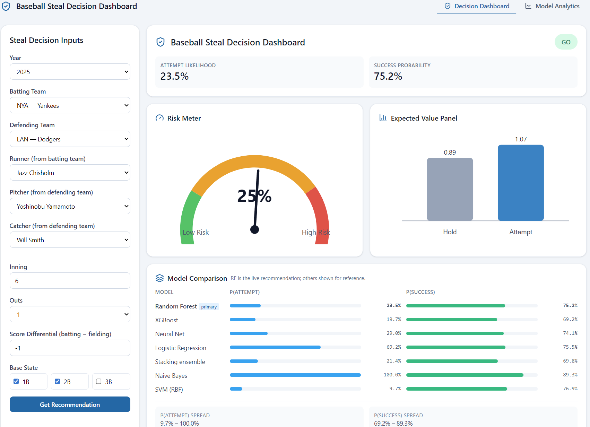
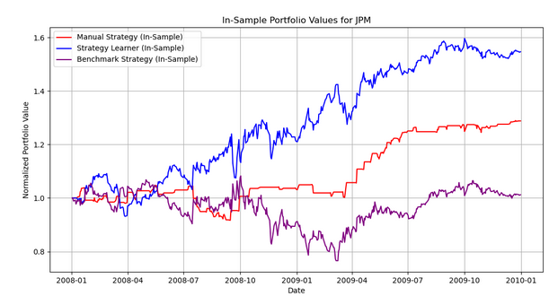
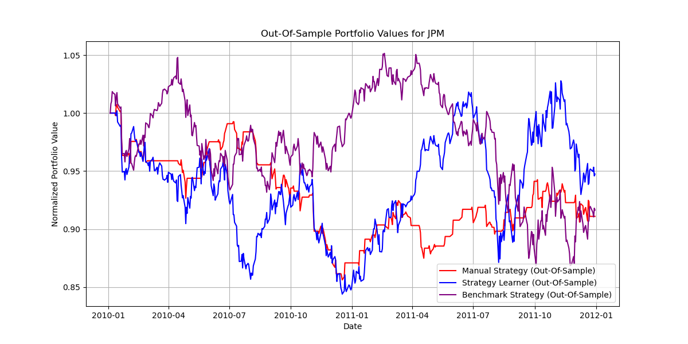

I'm a software engineer with five years of experience building payments and data infrastructure at Interac, IBM and Scotiabank. I'm now finishing a Master of Science in Computer Science at Georgia Tech, specializing in machine learning.
I'm most interested in data science and applied machine learning, particularly fraud and risk problems in fintech, where my payments background applies directly. The projects below are where I've taken models from raw data through to evaluation.
Building and evaluating predictive models (scikit-learn, XGBoost, PyTorch) for classification, feature engineering, and reinforcement learning (Q-learning); comfortable in pandas/NumPy for data prep and AUC-ROC/Sharpe ratio for evaluation
A live Go/No-Go dashboard for MLB stolen-base decisions. Two models per situation, one for attempt likelihood and one for success likelihood, feed an expected-value engine alongside a 24-state Markov run-expectancy matrix.

Watch the demo Project poster Code
Built on about 2M play-by-play events from Retrosheet joined with Statcast player metrics (2015 to 2025), covering about 387K steal opportunities. Trained on 2015 to 2020 and tested on 2021 to 2025.
Compared seven classifiers by AUC-ROC, since accuracy misleads when only 7% of opportunities end in an attempt. XGBoost scored best on attempt prediction at 0.804, and a Random Forest (0.789) powers the live dashboard. Success prediction sits around 0.58 across models, in line with prior research.
Built with a team of four at Georgia Tech. I worked across the React/D3 frontend, the data pipeline, and model development and evaluation.
Framed single-stock trading as a reinforcement learning problem: a Q-Learning agent with Dyna-Q planning over discretized MACD, Momentum and Stochastic Oscillator states (1000 states, 3 actions).
On JPM in-sample (2008 to 2009), the learner returned about 55% cumulatively, against 28.8% for a hand-built rules strategy and 1.2% for buy-and-hold. Its Sharpe ratio fell from 3.45 to 0.73 as simulated market impact rose from 0% to 5%.

Out of sample (2010 to 2011) that edge mostly disappeared. All three strategies lost money, and the learner finished only slightly ahead of buy-and-hold. I attribute this to overfitting: the training window was the post-2008 recovery, a strongly trending market, and the test window was choppier with shorter-lived trends.

The best way to reach me is on LinkedIn: linkedin.com/in/aayusheth
My code is on GitHub: github.com/aayush4249